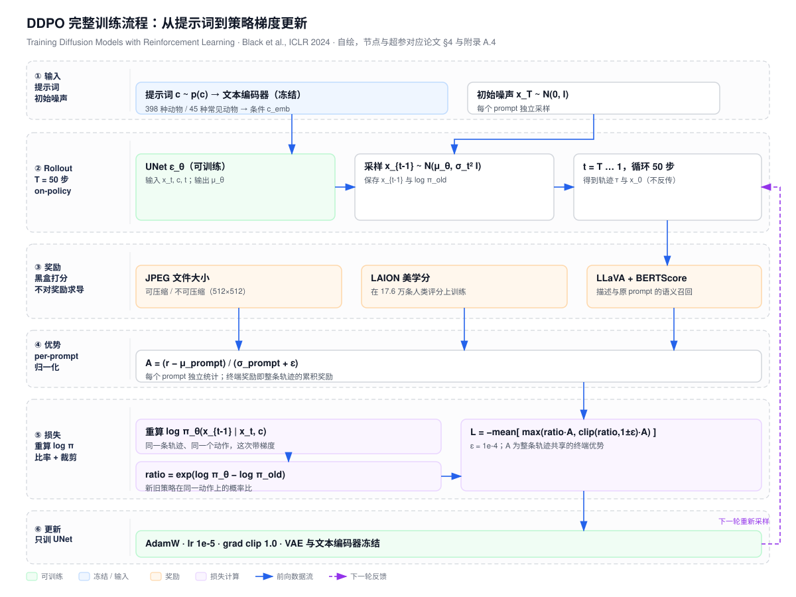
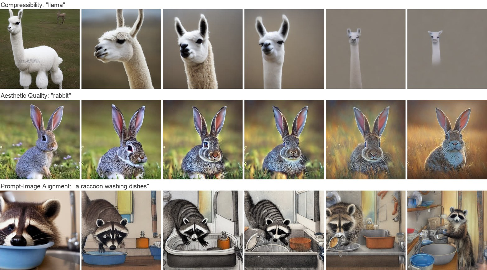
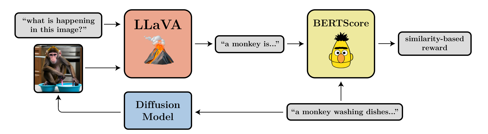
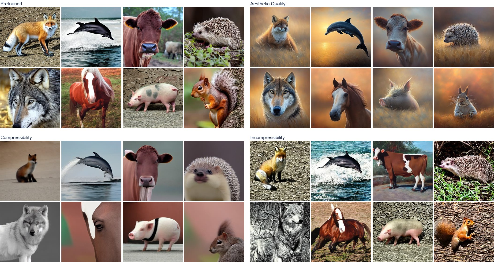
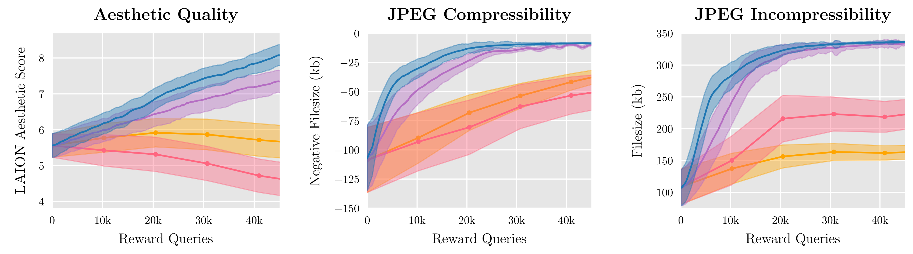
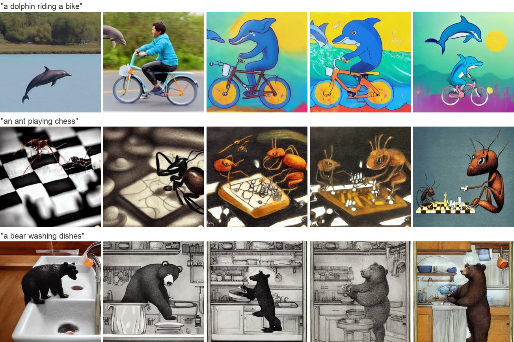
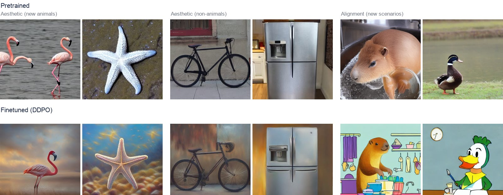
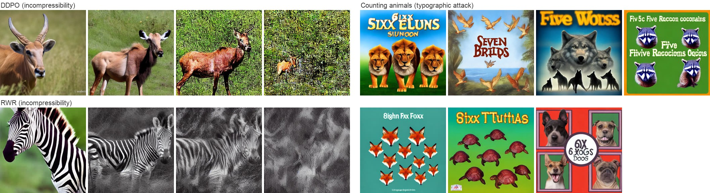

🎮 费曼一分钟（通俗速读）
扩散模型是用「对数似然的近似」训出来的，但我们真正想要的往往不是似然，而是「图好不好看」「文件能不能压小」这类下游指标。这些指标没法写进 prompt，也没法用监督学习直接训。DDPO 的做法是：把 50 步去噪过程当成 50 步决策——每一步的「状态」是（prompt、当前时间步、当前噪声图），「动作」是这一步输出的更干净的图，「策略」就是去噪网络本身。因为采样器固定、每步加的高斯噪声方差已知，每一步的条件似然是可以精确算出来的，于是可以直接套用策略梯度（REINFORCE / PPO）：采样一批轨迹 → 给最终图打一个奖励分 → 把奖励乘到「每步 log 概率的梯度」上，好图加分、差图减分。
关键对比是 RWR（奖励加权回归）：它把去噪压成「一步」决策，只用最终图，用 $e^{\beta r}$ 加权原来的去噪损失。但去噪损失只是似然的变分下界，不是真似然，所以「加权似然 ≈ 带 KL 约束的奖励最大化」这一步在扩散模型上并不成立。DDPO 换到多步 MDP 上用精确似然，效果明显更好，而且每轮只要 256 个样本（RWR 要 1 万个）。论文用三个奖励做了验证：JPEG 可压缩性、LAION 美学分、以及用 LLaVA 描述 + BERTScore 算出的「图文对齐」分——最后这个相当于把人工标注换成了 VLM 打分（RLAIF）。

Abstract
Diffusion models are a class of flexible generative models trained with an approximation to the log-likelihood objective. However, most use cases of diffusion models are not concerned with likelihoods, but instead with downstream objectives such as human-perceived image quality or drug effectiveness.
In this paper, we investigate reinforcement learning methods for directly optimizing diffusion models for such objectives. We describe how posing denoising as a multi-step decision-making problem enables a class of policy gradient algorithms, which we refer to as Denoising Diffusion Policy Optimization (DDPO), that are more effective than alternative reward-weighted likelihood approaches.
Empirically, DDPO can adapt text-to-image diffusion models to objectives that are difficult to express via prompting, such as image compressibility, and those derived from human feedback, such as aesthetic quality. Finally, we show that DDPO can improve prompt-image alignment using feedback from a vision-language model without the need for additional data collection or human annotation.
扩散模型是一类灵活的生成模型，其训练目标是对数似然目标的一个近似。然而，扩散模型的大多数使用场景并不关心似然，而是关心下游目标，例如人类感知的图像质量或药物有效性。
本文研究用强化学习方法直接针对这类目标优化扩散模型。我们说明：把去噪过程表述为一个多步决策问题，可以导出一类策略梯度算法，我们称之为去噪扩散策略优化（DDPO），它比另一类「奖励加权似然」方法更有效。
在实验上，DDPO 能把文生图扩散模型适配到难以通过提示词表达的目标（如图像可压缩性），以及来自人类反馈的目标（如美学质量）。最后我们展示：DDPO 可以利用视觉-语言模型的反馈来改善提示-图像对齐，而无需额外收集数据或人工标注。
四句话的骨架
① 现状错配：训练用似然，使用看下游指标；② 方法：去噪 = 多步决策 → 策略梯度；③ 证据一：可压缩性 / 美学；④ 证据二：VLM 反馈做对齐，免人工标注。
「more effective than」的比较对象
指 RWR（reward-weighted regression，即 Lee et al. 2023 的 AlignProp 前身式做法）。全文的核心卖点就是「多步 MDP + 精确似然」胜过「单步 MDP + 变分下界」。
读之前先记住
这不是「用 RLHF 训扩散」的第一篇（DPOK 同期），它的差异点是：多提示词联合训练 + 多种奖励（含 VLM 自动奖励）+ 泛化分析。
1. Introduction
Diffusion probabilistic models have recently emerged as the de facto standard for generative modeling in continuous domains. Their flexibility in representing complex, high-dimensional distributions has led to the adoption of diffusion models in applications including image and video synthesis, drug and material design, and continuous control.
The key idea behind diffusion models is to iteratively transform a simple prior distribution into a target distribution by applying a sequential denoising process. This procedure is conventionally motivated as a maximum likelihood estimation problem, with the objective derived as a variational lower bound on the log-likelihood of the training data.
扩散概率模型近来已成为连续域生成建模事实上的标准。它们在表示复杂高维分布上的灵活性，使扩散模型被用于图像与视频合成、药物与材料设计以及连续控制等应用。
扩散模型的核心思想是：通过一个顺序去噪过程，把简单的先验分布迭代地变换为目标分布。这一过程通常被表述为最大似然估计问题，其目标被推导为训练数据对数似然的一个变分下界。
这段在做什么
建立「扩散 = 似然驱动」的默认叙事，为下一段的反转做铺垫：训练用似然，使用却不用似然。
「variational lower bound」的分量
这个措辞是全文技术论证的支点。因为 $\mathcal{L}_{\text{diff}}$ 只是下界（不是精确似然），所以「加权似然」类方法（RWR）在理论上站不住——§4.2 会回收这一点。
However, most use cases of diffusion models are not directly concerned with likelihoods, but instead with downstream objective such as human-perceived image quality or drug effectiveness. In this paper, we consider the problem of training diffusion models to satisfy such objectives directly, as opposed to matching a data distribution.
This problem is challenging because exact likelihood computation with diffusion models is intractable, making it difficult to apply many conventional reinforcement learning (RL) algorithms. We instead propose to frame denoising as a multi-step decision-making task, using the exact likelihoods at each denoising step in place of the approximate likelihoods induced by a full denoising process. We present a policy gradient algorithm, which we refer to as DDPO, that can optimize a diffusion model for downstream tasks using only a black-box reward function.
然而，扩散模型的大多数使用场景并不直接关心似然，而是关心下游目标，例如人类感知的图像质量或药物有效性。本文考虑的问题是：直接训练扩散模型去满足这类目标，而不是去匹配数据分布。
这个问题之所以困难，是因为扩散模型的精确似然计算是不可解的，这使得许多常规强化学习算法难以直接套用。我们改为把去噪过程表述为一个多步决策任务，用每一步去噪的精确似然替代「整条去噪过程所诱导的近似似然」。我们提出一个策略梯度算法 DDPO，它只需一个黑盒奖励函数就能针对下游任务优化扩散模型。
一句话的技术转折
$p_\theta(x_0\mid c)$ 算不出来 → 但 $p_\theta(x_{t-1}\mid x_t,c)$ 是已知方差的高斯，算得出来。把「一条轨迹」拆成「T 个可算的小步」，问题就解开了。
为什么这算「换问题」而非「近似」
RWR 用下界近似真似然（有偏）；DDPO 用每步真似然（无偏的梯度估计，方差另说）。这是全文最重要的区别，也是 §4.2 批评 RWR 的依据。
「black-box reward」的含义
奖励不需要可微、不需要知道内部结构——只要能对生成结果打分。这直接打开了「用另一个大模型当裁判」的门（§5.3）。
We apply our algorithm to the finetuning of large text-to-image diffusion models. Our initial evaluation focuses on tasks that are difficult to specify via prompting, such as image compressibility, and those derived from human feedback, such as aesthetic quality.
However, because many reward functions of interest are difficult to specify programmatically, finetuning procedures often rely on large-scale human labeling efforts to obtain a reward signal. In the case of text-to-image diffusion, we propose a method for replacing such labeling with feedback from a vision-language model (VLM). Similar to RLAIF finetuning for language models, the resulting procedure allows for diffusion models to be adapted to reward functions that would otherwise require additional human annotations. We use this procedure to improve prompt-image alignment for unusual subject-setting compositions.
Our contributions are as follows. We first present the derivation and conceptual motivation of DDPO. We then document the design of various reward functions for text-to-image generation, ranging from simple computations to workflows involving large VLMs, and demonstrate the effectiveness of DDPO compared to alternative reward-weighted likelihood methods in these settings. Finally, we demonstrate the generalization ability of our finetuning procedure to unseen prompts.
我们把该算法用于大型文生图扩散模型的微调。初步评估聚焦于两类任务：难以通过提示词指定的任务（如图像可压缩性），以及来自人类反馈的任务（如美学质量）。
但由于许多感兴趣的奖励函数难以用程序化方式指定，微调流程往往依赖大规模人工标注来获得奖励信号。在文生图场景下，我们提出用视觉-语言模型（VLM）的反馈替代这类标注。与语言模型上的 RLAIF 微调类似，该流程使扩散模型能够适配那些原本需要额外人工标注的奖励函数。我们用这一流程改善「不寻常主体-场景组合」的提示-图像对齐。
我们的贡献如下：首先给出 DDPO 的推导与概念动机；其次记录文生图各类奖励函数的设计——从简单计算到涉及大型 VLM 的工作流——并在这些设定下证明 DDPO 相对奖励加权似然方法的有效性；最后展示微调过程对未见提示词的泛化能力。
三条贡献的分量
① 推导（方法）——最硬；② 奖励设计谱系（工程）——最实用；③ 泛化（现象）——最有意思但证据最弱（只有定性图 + 附录一张曲线）。
「RLAIF」类比的作用
把「VLM 当裁判」框定为语言模型 RLAIF 的视觉版，等于借用了已被接受的合法性。注意：这里 VLM 只负责描述，相似度由 BERTScore 算，不是让 VLM 直接打分。
与 DPOK 的隐含分工
同期 DPOK 只做单一偏好奖励（ImageReward）且每个 prompt 训一个模型；本文强调多 prompt（最多 398 个）联合训练 + 泛化。

2. Related Work
Diffusion probabilistic models. Denoising diffusion models have emerged as an effective class of generative models for modalities including images, videos, 3D shapes, and robotic trajectories. While the denoising objective is conventionally derived as an approximation to likelihood, the training of diffusion models typically departs from maximum likelihood in several ways. Modifying the objective to more strictly optimize likelihood often leads to worsened image quality, as likelihood is not a faithful proxy for visual quality. In this paper, we show how diffusion models can be optimized directly for downstream objectives.
Reinforcement learning from human feedback. A number of works have studied using human feedback to optimize models in settings such as simulated robotic control, game-playing, machine translation, citation retrieval, summarization, instruction-following, and alignment with specifications. Recently, Lee et al. studied the alignment of text-to-image diffusion models to human preferences using a method based on reward-weighted likelihood maximization. In our comparisons, their method corresponds to one iteration of the reward-weighted regression (RWR) method.
扩散概率模型。去噪扩散模型已成为图像、视频、3D 形状与机器人轨迹等多种模态上有效的一类生成模型。虽然去噪目标通常被推导为似然的近似，但扩散模型的训练在若干方面通常偏离最大似然。把目标改得更严格地优化似然，往往会恶化图像质量，因为似然并不是视觉质量的忠实代理。本文展示如何直接针对下游目标优化扩散模型。
基于人类反馈的强化学习。已有大量工作研究用人类反馈优化模型，场景包括模拟机器人控制、博弈、机器翻译、引文检索、摘要、指令遵循以及与规范的对齐。最近 Lee 等人用基于奖励加权似然最大化的方法研究文生图扩散模型与人类偏好的对齐。在我们的比较中，他们的方法相当于奖励加权回归（RWR）方法的一次迭代。
为什么先讲「似然 ≠ 质量」
如果似然就是质量，那直接最大似然就够了，不需要 RL。作者先用这条文献事实把「优化下游目标」的必要性钉住。
把 AlignProp 归约为 RWR 一次迭代
这是很聪明的定位：把最强的同类方法降格为「我们框架的一个特例（k=1）」，从而让「多轮 online RWR」和「DDPO」都成为自己框架内的变体，比较才有层级。
Diffusion models as sequential decision-making processes. Although predating diffusion models, Bachman et al. similarly posed data generation as a sequential decision-making problem and used the resulting framework to apply reinforcement learning methods to image generation. More recently, Fan et al. introduced a policy gradient method for training diffusion models. However, this paper aimed to improve data distribution matching rather than optimizing downstream objectives, and therefore the only reward function considered was a GAN-like discriminator.
In concurrent work to ours, DPOK built upon Fan et al. and Lee et al. to better align text-to-image diffusion models to human preferences using a policy gradient algorithm. Like Lee et al., DPOK only considers a single preference-based reward function; additionally, their work studies KL-regularization and primarily focuses on training a different diffusion model for each prompt. In contrast, we train on many prompts at once (up to 398) and demonstrate generalization to many more prompts outside the training set. Furthermore, we study how DDPO can be applied to multiple reward functions beyond those based on human feedback, including how rewards derived automatically from VLMs can improve prompt-image alignment.
把扩散模型视为顺序决策过程。早在扩散模型出现之前，Bachman 等人就把数据生成表述为顺序决策问题，并用由此得到的框架把强化学习方法用于图像生成。更近期，Fan 等人提出了训练扩散模型的策略梯度方法。但该文的目标是改善数据分布匹配，而非优化下游目标，因此只考虑了类 GAN 判别器这一种奖励函数。
在与本文同期的工作中，DPOK 在 Fan 等人与 Lee 等人的基础上，用策略梯度算法更好地把文生图扩散模型对齐到人类偏好。与 Lee 等人一样，DPOK 只考虑单一的基于偏好的奖励函数；此外，他们的工作研究 KL 正则，并且主要聚焦于为每个 prompt 训练一个不同的扩散模型。相比之下，我们一次性在多个 prompt（最多 398 个）上训练，并展示对训练集之外更多 prompt 的泛化。此外，我们研究 DDPO 如何应用于人类反馈之外的多种奖励函数，包括如何用 VLM 自动导出的奖励来改善提示-图像对齐。
三条差异线
① 目标：分布匹配 vs 下游目标；② 奖励：单一偏好 vs 多奖励（含 VLM）；③ 训练：每 prompt 一模型 vs 多 prompt 一模型。
为什么「多 prompt」重要
单 prompt 训练无法谈泛化，也无法解释「跨 prompt 迁移」这一现象（§6.3 的「a dolphin riding a bike」零成功率案例）。这是本文相对 DPOK 最有辨识度的实验设计。
注意
DPOK 有 KL 正则而本文没有——这既是差异也是本文的弱点（附录 A.1 承认过优化问题）。
3. Preliminaries
In this work, we consider conditional diffusion probabilistic models, which represent a distribution $p(\mathbf{x}_0 \mid \mathbf{c})$ over a dataset of samples $\mathbf{x}_0$ and corresponding contexts $\mathbf{c}$. The distribution is modeled as the reverse of a Markovian forward process $q(\mathbf{x}_t \mid \mathbf{x}_{t-1})$, which iteratively adds noise to the data. Reversing the forward process can be accomplished by training a neural network $\boldsymbol{\mu}_\theta(\mathbf{x}_t, \mathbf{c}, t)$ with the following objective:
$$\mathcal{L}_{\text{diff}}(\theta) = \mathbb{E}_{(\mathbf{x}_0,\mathbf{c}),\,t\sim\mathcal{U}\{0,T\},\,\mathbf{x}_t\sim q}\left[\left\|\tilde{\boldsymbol{\mu}}(\mathbf{x}_0,t) - \boldsymbol{\mu}_\theta(\mathbf{x}_t,\mathbf{c},t)\right\|^2\right]$$
where $\tilde{\boldsymbol{\mu}}$ is the posterior mean of the forward process, a weighted average of $\mathbf{x}_0$ and $\mathbf{x}_t$. This objective is justified as maximizing a variational lower bound on the log-likelihood of the data.
Sampling begins with drawing a random $\mathbf{x}_T \sim \mathcal{N}(\mathbf{0}, \mathbf{I})$ and following the reverse process $p_\theta(\mathbf{x}_{t-1} \mid \mathbf{x}_t, \mathbf{c})$. Most popular samplers use an isotropic Gaussian reverse process with a fixed timestep-dependent variance:
$$p_\theta(\mathbf{x}_{t-1} \mid \mathbf{x}_t, \mathbf{c}) = \mathcal{N}\!\left(\mathbf{x}_{t-1} \mid \boldsymbol{\mu}_\theta(\mathbf{x}_t,\mathbf{c},t),\ \sigma_t^2 \mathbf{I}\right)$$
本文考虑条件扩散概率模型，它在样本 $\mathbf{x}_0$ 与对应上下文 $\mathbf{c}$ 构成的数据集上表示一个分布 $p(\mathbf{x}_0 \mid \mathbf{c})$。该分布被建模为马尔可夫前向过程 $q(\mathbf{x}_t \mid \mathbf{x}_{t-1})$ 的逆过程，前向过程迭代地向数据加噪。逆过程可以通过训练一个神经网络 $\boldsymbol{\mu}_\theta(\mathbf{x}_t, \mathbf{c}, t)$ 来完成，其目标为：
$$\mathcal{L}_{\text{diff}}(\theta) = \mathbb{E}_{(\mathbf{x}_0,\mathbf{c}),\,t\sim\mathcal{U}\{0,T\},\,\mathbf{x}_t\sim q}\left[\left\|\tilde{\boldsymbol{\mu}}(\mathbf{x}_0,t) - \boldsymbol{\mu}_\theta(\mathbf{x}_t,\mathbf{c},t)\right\|^2\right]$$
其中 $\tilde{\boldsymbol{\mu}}$ 是前向过程的后验均值，即 $\mathbf{x}_0$ 与 $\mathbf{x}_t$ 的加权平均。该目标被论证为最大化数据对数似然的一个变分下界。
采样从随机抽取 $\mathbf{x}_T \sim \mathcal{N}(\mathbf{0}, \mathbf{I})$ 开始，然后沿逆过程 $p_\theta(\mathbf{x}_{t-1} \mid \mathbf{x}_t, \mathbf{c})$ 进行。多数流行采样器使用各向同性高斯逆过程，其方差只依赖时间步且固定：
$$p_\theta(\mathbf{x}_{t-1} \mid \mathbf{x}_t, \mathbf{c}) = \mathcal{N}\!\left(\mathbf{x}_{t-1} \mid \boldsymbol{\mu}_\theta(\mathbf{x}_t,\mathbf{c},t),\ \sigma_t^2 \mathbf{I}\right)$$
式 (2) 是全文的地基
「方差固定、只学均值」这个假设，让每一步的条件分布变成已知协方差的高斯。于是 $\log p_\theta(x_{t-1}\mid x_t,c)$ 有解析式，梯度可算——这正是 DDPO 能做而 RWR 不能做的原因。
为什么不是「近似」
式 (2) 是采样器的定义，不是对 $p_\theta(x_0\mid c)$ 的近似。DDPO 优化的就是「这个采样器所诱导的分布」上的期望奖励，目标与实现严格一致。
代价
把模型绑死在某个采样器上（DDIM / $\eta$ 固定）。换采样器 = 换 MDP，策略也就变了。这是后续工作（如 Flow-GRPO 换到 ODE→SDE）要重新推导的原因。
A Markov decision process (MDP) is a formalization of sequential decision-making problems. An MDP is defined by a tuple $(\mathcal{S}, \mathcal{A}, \rho_0, P, R)$, in which $\mathcal{S}$ is the state space, $\mathcal{A}$ is the action space, $\rho_0$ is the distribution of initial states, $P$ is the transition kernel, and $R$ is the reward function.
At each timestep $t$, the agent observes a state $\mathbf{s}_t \in \mathcal{S}$, takes an action $\mathbf{a}_t \in \mathcal{A}$, receives a reward $R(\mathbf{s}_t, \mathbf{a}_t)$, and transitions to a new state $\mathbf{s}_{t+1} \sim P(\mathbf{s}_{t+1} \mid \mathbf{s}_t, \mathbf{a}_t)$. As the agent acts, it produces trajectories $\tau = (\mathbf{s}_0, \mathbf{a}_0, \dots, \mathbf{s}_T, \mathbf{a}_T)$. The RL objective is to maximize the expected cumulative reward:
$$\mathcal{J}_{\text{RL}}(\pi) = \mathbb{E}_{\tau \sim p(\tau \mid \pi)}\left[\sum_{t=0}^{T} R(\mathbf{s}_t, \mathbf{a}_t)\right]$$
马尔可夫决策过程（MDP）是顺序决策问题的一种形式化。MDP 由元组 $(\mathcal{S}, \mathcal{A}, \rho_0, P, R)$ 定义，其中 $\mathcal{S}$ 是状态空间，$\mathcal{A}$ 是动作空间，$\rho_0$ 是初始状态分布，$P$ 是转移核，$R$ 是奖励函数。
在每一时间步 $t$，智能体观察到状态 $\mathbf{s}_t \in \mathcal{S}$，采取动作 $\mathbf{a}_t \in \mathcal{A}$，获得奖励 $R(\mathbf{s}_t, \mathbf{a}_t)$，并转移到新状态 $\mathbf{s}_{t+1} \sim P(\mathbf{s}_{t+1} \mid \mathbf{s}_t, \mathbf{a}_t)$。智能体行动时产生轨迹 $\tau = (\mathbf{s}_0, \mathbf{a}_0, \dots, \mathbf{s}_T, \mathbf{a}_T)$。强化学习的目标是最大化期望累积奖励：
$$\mathcal{J}_{\text{RL}}(\pi) = \mathbb{E}_{\tau \sim p(\tau \mid \pi)}\left[\sum_{t=0}^{T} R(\mathbf{s}_t, \mathbf{a}_t)\right]$$
只需记住三件事
① 轨迹是 $(s,a)$ 的序列；② 目标是累积奖励的期望；③ 策略 $\pi(a\mid s)$ 决定轨迹分布。
后面要用的隐含性质
本文的 MDP 是确定性转移 + 稀疏终端奖励：$P$ 是狄拉克 δ，$R$ 只在 $t=0$ 非零。于是「累积奖励」退化为「终端奖励」，优势估计也退化为「整条轨迹一个标量」——这就是为什么不需要 critic。
4. Reinforcement Learning Training of Diffusion Models
We now describe how RL algorithms can be used to train diffusion models. We present two classes of methods and show that each corresponds to a different mapping of the denoising process to the MDP framework.
Problem statement. We assume a pre-existing diffusion model, which may be pretrained or randomly initialized. Assuming a fixed sampler, the diffusion model induces a sample distribution $p_\theta(\mathbf{x}_0 \mid \mathbf{c})$. The denoising diffusion RL objective is to maximize a reward signal $r$ defined on the samples and contexts:
$$\mathcal{J}_{\text{DDRL}}(\theta) = \mathbb{E}_{\mathbf{c}\sim p(\mathbf{c}),\ \mathbf{x}_0 \sim p_\theta(\mathbf{x}_0 \mid \mathbf{c})}\left[r(\mathbf{x}_0, \mathbf{c})\right]$$
for some context distribution $p(\mathbf{c})$ of our choosing.
下面说明如何用强化学习算法训练扩散模型。我们给出两类方法，并说明它们各自对应去噪过程到 MDP 框架的不同映射。
问题陈述。假设已有一个扩散模型（预训练或随机初始化均可）。在采样器固定的前提下，该扩散模型诱导出一个样本分布 $p_\theta(\mathbf{x}_0 \mid \mathbf{c})$。去噪扩散强化学习的目标是最大化定义在样本与上下文上的奖励信号 $r$：
$$\mathcal{J}_{\text{DDRL}}(\theta) = \mathbb{E}_{\mathbf{c}\sim p(\mathbf{c}),\ \mathbf{x}_0 \sim p_\theta(\mathbf{x}_0 \mid \mathbf{c})}\left[r(\mathbf{x}_0, \mathbf{c})\right]$$
其中上下文分布 $p(\mathbf{c})$ 由我们自行选择。
与标准 RL 的差别
标准 RL 的 $\mathcal{J}_{\text{RL}}$ 对轨迹求和；这里直接对「最终样本」求期望。两者只有在奖励设计正确时才等价——§4.3 的 MDP 映射就是用来保证这一点的。
$p(\mathbf{c})$ 是自由变量
这是本文能做「多 prompt 联合训练」的形式化依据：prompt 分布由研究者指定，因此可以选 398 种动物，也可以选 45 种。它同时决定了泛化的边界。
注意「fixed sampler」
目标里已经隐含了采样器。换 $T$、换 $\eta$、换 guidance 权重，都会改变被优化的对象。
Reward-weighted regression. To optimize $\mathcal{J}_{\text{DDRL}}$ with minimal changes to standard diffusion model training, we can use the denoising loss $\mathcal{L}_{\text{diff}}$, but with training data $\mathbf{x}_0 \sim p_\theta(\mathbf{x}_0 \mid \mathbf{c})$ and an added weighting that depends on the reward $r(\mathbf{x}_0, \mathbf{c})$. A standard weighting scheme uses exponentiated rewards to ensure nonnegativity,
$$w_{\text{RWR}}(\mathbf{x}_0, \mathbf{c}) = \frac{1}{Z}\exp\big(\beta r(\mathbf{x}_0, \mathbf{c})\big)$$
where $\beta$ is an inverse temperature and $Z$ a normalization constant. We also consider a simplified weighting scheme that uses binary weights, $w_{\text{sparse}}(\mathbf{x}_0,\mathbf{c}) = \mathbf{1}[r(\mathbf{x}_0,\mathbf{c}) \geq C]$, where $C$ is a reward threshold. In supervised learning terms, this is equivalent to repeated filtered finetuning on training data coming from the model.
Within the RL formalism, the RWR procedure corresponds to the following one-step MDP: $\mathbf{s} \triangleq \mathbf{c}$, $\mathbf{a} \triangleq \mathbf{x}_0$, $\pi(\mathbf{a}\mid\mathbf{s}) \triangleq p_\theta(\mathbf{x}_0\mid\mathbf{c})$, $\rho_0(\mathbf{s}) \triangleq p(\mathbf{c})$, $R(\mathbf{s},\mathbf{a}) \triangleq r(\mathbf{x}_0,\mathbf{c})$, with a transition kernel that immediately leads to an absorbing termination state.
From RL literature, weighting a log-likelihood objective by $w_{\text{RWR}}$ is known to approximately maximize $\mathcal{J}_{\text{RL}}(\pi)$ subject to a KL divergence constraint on $\pi$. However, $\mathcal{L}_{\text{diff}}$ does not involve an exact log-likelihood — it is instead derived as a variational bound on $\log p_\theta(\mathbf{x}_0 \mid \mathbf{c})$. Therefore, the RWR procedure applied to diffusion model training is not theoretically justified and only optimizes $\mathcal{J}_{\text{DDRL}}$ very approximately.
奖励加权回归。为了在对标准扩散训练改动最小的前提下优化 $\mathcal{J}_{\text{DDRL}}$，可以沿用去噪损失 $\mathcal{L}_{\text{diff}}$，但把训练数据换成 $\mathbf{x}_0 \sim p_\theta(\mathbf{x}_0 \mid \mathbf{c})$，并加入一个依赖奖励 $r(\mathbf{x}_0, \mathbf{c})$ 的权重。标准做法用指数化奖励来保证非负：
$$w_{\text{RWR}}(\mathbf{x}_0, \mathbf{c}) = \frac{1}{Z}\exp\big(\beta r(\mathbf{x}_0, \mathbf{c})\big)$$
其中 $\beta$ 是逆温度，$Z$ 是归一化常数。我们也考虑一种简化的二值权重方案 $w_{\text{sparse}}(\mathbf{x}_0,\mathbf{c}) = \mathbf{1}[r(\mathbf{x}_0,\mathbf{c}) \geq C]$，其中 $C$ 是奖励阈值。用监督学习的说法，这等价于在模型自己产出的数据上反复做「过滤后微调」。
在 RL 形式化下，RWR 对应下面这个单步 MDP：$\mathbf{s} \triangleq \mathbf{c}$，$\mathbf{a} \triangleq \mathbf{x}_0$，$\pi(\mathbf{a}\mid\mathbf{s}) \triangleq p_\theta(\mathbf{x}_0\mid\mathbf{c})$，$\rho_0(\mathbf{s}) \triangleq p(\mathbf{c})$，$R(\mathbf{s},\mathbf{a}) \triangleq r(\mathbf{x}_0,\mathbf{c})$，其转移核立即进入吸收终止状态。
根据强化学习文献，用 $w_{\text{RWR}}$ 加权对数似然目标，已知可近似地最大化「带 KL 散度约束的 $\mathcal{J}_{\text{RL}}(\pi)$」。然而，$\mathcal{L}_{\text{diff}}$ 并不涉及精确对数似然——它是 $\log p_\theta(\mathbf{x}_0 \mid \mathbf{c})$ 的一个变分下界。因此，把 RWR 用于扩散模型训练在理论上并不成立，只是非常近似地优化了 $\mathcal{J}_{\text{DDRL}}$。
RWR 的三层结构
① 采样（从当前模型）；② 打分（奖励）；③ 用 $e^{\beta r}$ 加权原来的去噪 MSE。工程上改动极小，这是它的吸引力。
理论缺口在哪
「加权对数似然 ≈ KL 约束下的奖励最大化」这条定理的前提是精确对数似然。扩散模型只有下界，于是定理的前提不成立。注意作者措辞是「not theoretically justified」，不是「一定更差」——差多少要靠实验（§6.1）。
单步 MDP 的后果
把整条去噪轨迹压成一个动作，等于放弃了「每一步都能算似然」这个唯一的优势。DDPO 的全部收益都来自把这层展开。
Denoising diffusion policy optimization. RWR relies on an approximate log-likelihood because it ignores the sequential nature of the denoising process, only using the final samples $\mathbf{x}_0$. In this section, we show how the denoising process can be reframed as a multi-step MDP, allowing us to directly optimize $\mathcal{J}_{\text{DDRL}}$ using policy gradient estimators.
Denoising as a multi-step MDP. We map the iterative denoising procedure to the following MDP:
$$\mathbf{s}_t \triangleq (\mathbf{c}, t, \mathbf{x}_t) \qquad \mathbf{a}_t \triangleq \mathbf{x}_{t-1} \qquad \pi(\mathbf{a}_t \mid \mathbf{s}_t) \triangleq p_\theta(\mathbf{x}_{t-1} \mid \mathbf{x}_t, \mathbf{c})$$
$$P(\mathbf{s}_{t+1} \mid \mathbf{s}_t, \mathbf{a}_t) \triangleq \big(\delta_{\mathbf{c}}, \delta_{t-1}, \delta_{\mathbf{x}_{t-1}}\big) \qquad \rho_0(\mathbf{s}_0) \triangleq \big(p(\mathbf{c}), \delta_T, \mathcal{N}(\mathbf{0}, \mathbf{I})\big)$$
$$R(\mathbf{s}_t, \mathbf{a}_t) \triangleq \begin{cases} r(\mathbf{x}_0, \mathbf{c}) & \text{if } t = 0 \\ 0 & \text{otherwise} \end{cases}$$
in which $\delta_y$ is the Dirac delta distribution with nonzero density only at $y$. Trajectories consist of $T$ timesteps, after which $P$ leads to a termination state. The cumulative reward of each trajectory is equal to $r(\mathbf{x}_0, \mathbf{c})$, so maximizing $\mathcal{J}_{\text{DDRL}}(\theta)$ is equivalent to maximizing $\mathcal{J}_{\text{RL}}(\pi)$ in this MDP.
The benefit of this formulation is that if we use a standard sampler with $p_\theta(\mathbf{x}_{t-1} \mid \mathbf{x}_t, \mathbf{c})$ parameterized as in Equation 2, the policy $\pi$ becomes an isotropic Gaussian as opposed to the arbitrarily complicated distribution $p_\theta(\mathbf{x}_0 \mid \mathbf{c})$ as it is in the RWR formulation. This simplification allows for the evaluation of exact log-likelihoods and their gradients with respect to the diffusion model parameters.
去噪扩散策略优化。RWR 之所以只能依赖近似的对数似然，是因为它忽略了去噪过程的顺序结构，只使用最终样本 $\mathbf{x}_0$。本节说明如何把去噪过程重新表述为一个多步 MDP，从而用策略梯度估计量直接优化 $\mathcal{J}_{\text{DDRL}}$。
把去噪视为多步 MDP。我们把迭代去噪过程映射为如下 MDP：
$$\mathbf{s}_t \triangleq (\mathbf{c}, t, \mathbf{x}_t) \qquad \mathbf{a}_t \triangleq \mathbf{x}_{t-1} \qquad \pi(\mathbf{a}_t \mid \mathbf{s}_t) \triangleq p_\theta(\mathbf{x}_{t-1} \mid \mathbf{x}_t, \mathbf{c})$$
$$P(\mathbf{s}_{t+1} \mid \mathbf{s}_t, \mathbf{a}_t) \triangleq \big(\delta_{\mathbf{c}}, \delta_{t-1}, \delta_{\mathbf{x}_{t-1}}\big) \qquad \rho_0(\mathbf{s}_0) \triangleq \big(p(\mathbf{c}), \delta_T, \mathcal{N}(\mathbf{0}, \mathbf{I})\big)$$
$$R(\mathbf{s}_t, \mathbf{a}_t) \triangleq \begin{cases} r(\mathbf{x}_0, \mathbf{c}) & \text{若 } t = 0 \\ 0 & \text{其他} \end{cases}$$
其中 $\delta_y$ 是只在 $y$ 处密度非零的狄拉克 δ 分布。轨迹包含 $T$ 个时间步，之后 $P$ 进入终止状态。每条轨迹的累积奖励等于 $r(\mathbf{x}_0, \mathbf{c})$，因此最大化 $\mathcal{J}_{\text{DDRL}}(\theta)$ 等价于在这个 MDP 中最大化 $\mathcal{J}_{\text{RL}}(\pi)$。
这一表述的好处是：如果使用按式 (2) 参数化的标准采样器，策略 $\pi$ 就变成各向同性高斯，而不是 RWR 表述中那个任意复杂的分布 $p_\theta(\mathbf{x}_0 \mid \mathbf{c})$。这一简化使得我们可以计算精确的对数似然及其关于扩散模型参数的梯度。
为什么「多步」是必要的
单步 MDP 里策略是 $p_\theta(x_0\mid c)$——一个 512×512×3 维空间上的隐式分布，似然不可算。多步 MDP 里策略是 $\mathcal{N}(x_{t-1};\mu_\theta,\sigma_t^2 I)$——协方差已知，似然是解析的。
奖励设计的巧思
把奖励全部放在 $t=0$（终端），中间步为 0。这样「累积奖励 = 终端奖励」，不需要做 credit assignment 的折扣，也不需要 critic。代价是方差大（所有步共用同一个标量奖励）。
确定性转移的副作用
$P$ 是 δ，所以 $p(\tau\mid\pi) = \prod_t \pi(a_t\mid s_t)$——轨迹概率完全由策略决定，没有环境随机性。这让 REINFORCE 的推导变干净。
与 Fan et al. 的关系
同一映射在 Fan et al. 2023 中已出现，但那里的奖励是 GAN 判别器（为了匹配分布）。本文的贡献是把它接到任意下游奖励上。
Policy gradient estimation. With access to likelihoods and likelihood gradients, we can make direct Monte Carlo estimates of $\nabla_\theta \mathcal{J}_{\text{DDRL}}$. Like RWR, DDPO alternates collecting denoising trajectories $\{\mathbf{x}_T, \mathbf{x}_{T-1}, \dots, \mathbf{x}_0\}$ via sampling and updating parameters via gradient descent.
The first variant of DDPO, which we call DDPO$_{\text{SF}}$, uses the score function policy gradient estimator, also known as the likelihood ratio method or REINFORCE:
$$\nabla_\theta \mathcal{J}_{\text{DDRL}} = \mathbb{E}\left[\sum_{t=0}^{T} \nabla_\theta \log p_\theta(\mathbf{x}_{t-1} \mid \mathbf{x}_t, \mathbf{c}) \; r(\mathbf{x}_0, \mathbf{c})\right]$$
where the expectation is taken over denoising trajectories generated by the current parameters $\theta$. However, this estimator only allows for one step of optimization per round of data collection, as the gradient must be computed using data generated by the current parameters. To perform multiple steps of optimization, we may use an importance sampling estimator:
$$\nabla_\theta \mathcal{J}_{\text{DDRL}} = \mathbb{E}\left[\sum_{t=0}^{T} \frac{p_\theta(\mathbf{x}_{t-1} \mid \mathbf{x}_t, \mathbf{c})}{p_{\theta_{\text{old}}}(\mathbf{x}_{t-1} \mid \mathbf{x}_t, \mathbf{c})} \nabla_\theta \log p_\theta(\mathbf{x}_{t-1} \mid \mathbf{x}_t, \mathbf{c}) \; r(\mathbf{x}_0, \mathbf{c})\right]$$
which we refer to as DDPO$_{\text{IS}}$. This estimator becomes inaccurate if $p_\theta$ deviates too far from $p_{\theta_{\text{old}}}$, which can be addressed using trust regions to constrain the size of the update. In practice, we implement the trust region via clipping, as in proximal policy optimization (PPO).
策略梯度估计。在能获得似然与似然梯度的前提下，我们可以对 $\nabla_\theta \mathcal{J}_{\text{DDRL}}$ 做直接的蒙特卡洛估计。与 RWR 一样，DDPO 交替地进行「采样收集去噪轨迹 $\{\mathbf{x}_T, \mathbf{x}_{T-1}, \dots, \mathbf{x}_0\}$」与「用梯度下降更新参数」。
DDPO 的第一个变体我们称为 DDPO$_{\text{SF}}$，它使用得分函数策略梯度估计量，也称似然比方法或 REINFORCE：
$$\nabla_\theta \mathcal{J}_{\text{DDRL}} = \mathbb{E}\left[\sum_{t=0}^{T} \nabla_\theta \log p_\theta(\mathbf{x}_{t-1} \mid \mathbf{x}_t, \mathbf{c}) \; r(\mathbf{x}_0, \mathbf{c})\right]$$
其中期望取自当前参数 $\theta$ 生成的去噪轨迹。然而，该估计量在每轮数据收集后只允许做一步优化，因为梯度必须用当前参数生成的数据来计算。为了能做多步优化，我们可以使用重要性采样估计量：
$$\nabla_\theta \mathcal{J}_{\text{DDRL}} = \mathbb{E}\left[\sum_{t=0}^{T} \frac{p_\theta(\mathbf{x}_{t-1} \mid \mathbf{x}_t, \mathbf{c})}{p_{\theta_{\text{old}}}(\mathbf{x}_{t-1} \mid \mathbf{x}_t, \mathbf{c})} \nabla_\theta \log p_\theta(\mathbf{x}_{t-1} \mid \mathbf{x}_t, \mathbf{c}) \; r(\mathbf{x}_0, \mathbf{c})\right]$$
我们称之为 DDPO$_{\text{IS}}$。当 $p_\theta$ 偏离 $p_{\theta_{\text{old}}}$ 太远时，该估计量会变得不准，这可以通过信赖域来约束更新幅度加以解决。实践中我们用裁剪（clipping）实现信赖域，与近端策略优化（PPO）相同。
SF vs IS 的实质差别
SF：每轮采样 256 条 → 1 次梯度更新。IS：同样 256 条 → 切成 4 个 minibatch → 4 次更新。同样的采样成本，多 4 倍梯度步，这是 IS 略优的主要原因（§6.1 原文归因于「increased number of optimization steps」）。
为什么 clip range 要小到 1e-4
扩散的「动作」是整张图，维度极高，$p_\theta/p_{\theta_{old}}$ 稍微一动就爆炸。标准 RL 用 0.2，这里用 $10^{-4}$——这个数量级本身就是「高维动作空间让重要性采样几乎不可用」的证据。
没有 critic 的代价
奖励是终端标量，没有 baseline 就只有「每 prompt 的 running mean/std」做归一化（附录 A.3）。这等价于一个极简的 value baseline，方差仍偏大。
梯度形式对照
与语言模型 RLHF 的 PPO 完全同构，区别只在「token 序列」换成「去噪步序列」，且每步动作是连续高维向量而非离散 token。
5. Reward Functions for Text-to-Image Diffusion
In this work, we evaluate our methods on text-to-image diffusion. Text-to-image diffusion serves as a valuable test environment for reinforcement learning due to the availability of large pretrained models and the versatility of using diverse and visually interesting reward functions. We study a spectrum of reward functions of varying complexity, ranging from those that are straightforward to specify and evaluate to those that capture the depth of real-world downstream tasks.
Compressibility and incompressibility. The capabilities of text-to-image diffusion models are limited by the co-occurrences of text and images in their training distribution. For instance, images are rarely captioned with their file size, making it impossible to specify a desired file size via prompting. This limitation makes reward functions based on file size a convenient case study: they are simple to compute, but not controllable through the conventional methods of likelihood maximization and prompt engineering.
We fix the resolution of diffusion model samples at 512×512, such that the file size is determined solely by the compressibility of the image. We define two tasks based on file size: compressibility, in which the file size of the image after JPEG compression is minimized, and incompressibility, in which the same measure is maximized.
本文在文生图扩散模型上评估我们的方法。文生图扩散是强化学习的一个有价值的测试环境：既有大规模预训练模型可用，又能灵活地使用多样且视觉上有趣的奖励函数。我们研究一个复杂度各异的奖励函数谱系，从易于指定与评估的奖励，到能体现真实下游任务深度的奖励。
可压缩性与不可压缩性。文生图扩散模型的能力受训练分布中文本与图像共现关系的限制。例如，图像很少以文件大小作为标题，因此无法通过提示词指定期望的文件大小。这一限制使基于文件大小的奖励成为一个方便的案例：它计算简单，却无法通过传统的似然最大化与提示工程来控制。
我们把扩散模型样本的分辨率固定为 512×512，使文件大小完全由图像的可压缩性决定。基于文件大小我们定义两个任务：可压缩性，即最小化图像经 JPEG 压缩后的文件大小；不可压缩性，即最大化同一度量。
为什么选「文件大小」当第一个任务
它是「可精确计算、但完全不可提示」的极端样本。如果 DDPO 能学会它，就证明 RL 能触达 prompt 工程根本触达不到的区域。
两个方向互为镜像
可压缩 → 去背景、平滑；不可压缩 → 高频噪声、锐利边缘。后者正是附录 A.1 里「奖励被利用到语义崩塌」的起点。
固定 512×512 的作用
排除分辨率这个混淆变量，让文件大小只反映「内容复杂度」。这是让奖励成为干净实验工具的必要控制。
Aesthetic quality. To capture a reward function that would be useful to a human user, we define a task based on perceived aesthetic quality. We use the LAION aesthetics predictor, which is trained on 176,000 human image ratings. The predictor is implemented as a linear model on top of CLIP embeddings. Annotations range between 1 and 10, with the highest-rated images mostly containing artwork.
Since the aesthetic quality predictor is trained on human judgments, this task constitutes reinforcement learning from human feedback.
美学质量。为了刻画一个对人类用户有用的奖励函数，我们定义一个基于感知美学质量的任务。我们使用 LAION 美学预测器，它在 176,000 条人类图像评分上训练。该预测器实现为 CLIP 嵌入之上的一个线性模型。标注范围是 1 到 10，评分最高的图像大多是艺术作品。
由于美学质量预测器是在人类判断上训练的，该任务构成基于人类反馈的强化学习。
「RLHF」在这里的含义
不是在线问人，而是「用一个在人类评分上训好的打分器」。所以它是离线的、代理的人类反馈——与语言模型 RLHF 的 reward model 完全同构。
为什么结果是「变成插画」
训练集里高分图多为艺术作品 → 奖励函数把「艺术性」编码成「高分」。DDPO 忠实地把这个偏好放大（见 Fig.1 中排）。这不是 bug，是 reward hacking 的温和版本。
可微性无关
LAION 打分器其实可微（CLIP + 线性层），但 DDPO 只把它当黑盒用——这正是与 DRaFT / AlignProp 的分野。
Automated prompt alignment with vision-language models. A very general-purpose reward function for training a text-to-image model is prompt-image alignment. However, specifying a reward that captures generic prompt alignment is difficult, conventionally requiring large-scale human labeling efforts. We propose using an existing VLM to replace additional human annotation. This design is inspired by recent work on RLAIF, in which language models are improved using feedback from themselves.
We use LLaVA, a state-of-the-art VLM, to describe an image. The finetuning reward is the BERTScore recall metric, a measure of semantic similarity, using the prompt as the reference sentence and the VLM description as the candidate sentence. Samples that more faithfully include all of the details of the prompt receive higher rewards, to the extent that those visual details are legible to the VLM.
In Figure 4, we show one simple question: “what is happening in this image?”. While this captures the general task of prompt-image alignment, in principle any question could be used to specify complex or hard-to-define reward functions for a particular use case. One could even employ a language model to automatically generate candidate questions and evaluate responses based on the prompt. This framework provides a flexible interface where the complexity of the reward function is only limited by the capabilities of the vision and language models involved.
用视觉-语言模型实现自动提示对齐。训练文生图模型时一个非常通用的奖励函数是提示-图像对齐。然而，要指定一个能刻画通用提示对齐的奖励很困难，传统上需要大规模人工标注。我们提出用现成的 VLM 替代额外的人工标注。这一设计受近期 RLAIF 工作的启发——用模型自身的反馈来改进模型。
我们用最先进的 VLM LLaVA 来描述图像。微调奖励是 BERTScore 召回率，一种语义相似度度量：以提示词为参考句，以 VLM 的描述为候选句。越忠实地包含提示词全部细节的样本获得越高奖励——前提是这些视觉细节对 VLM 而言是可辨识的。
在图 4 中我们只用一个简单问题：「这张图里发生了什么？」。虽然这已能刻画通用的提示-图像对齐任务，但原则上可以用任何问题来为特定用例指定复杂或难以定义的奖励函数。甚至可以用一个语言模型自动生成候选问题，并基于提示词评估回答。该框架提供了一个灵活的接口：奖励函数的复杂度只受所涉视觉与语言模型能力的限制。
三步流水线
生成图 → LLaVA 写一句话描述 → 用 BERTScore 算「描述 vs 原 prompt」的召回。奖励 = 召回分。
为什么用 BERTScore 而不是让 VLM 直接打分
直接打分需要标定、易被提示词操纵；而「描述-原句相似度」是可复现的确定性计算，VLM 只承担「看图说话」这一它最擅长的角色。这是很克制的设计。
为什么用 recall 而非 F1
召回率奖励「把 prompt 里的元素都画出来」；F1 会同时惩罚「画了 prompt 没说的东西」，而生成模型几乎总会多画。用 recall 更符合「对齐」的直觉。
副作用：卡通化
训练后样本普遍变卡通（§6.2）。作者给两种解释：预训练分布里「动物做日常事」本就多为插画；或 LLaVA 更容易识别简单卡通图的内容。后者是典型的裁判偏好被利用。

💻 代码对照 — 从 $\nabla_\theta \mathcal{J}_{\text{DDRL}}$ 到 ddpo-pytorch
官方实现：github.com/kvablack/ddpo-pytorch（PyTorch + diffusers）。核心只有三处：scripts/train.py 的采样与 PPO 更新、ddpo_pytorch/diffusers_patch/ddim_with_logprob.py 的每步高斯 logprob、ddpo_pytorch/stat_tracking.py 的 per-prompt 优势归一化。
| 论文符号 / 步骤 | 代码位置 | 含义 |
|---|---|---|
| $\pi_\theta(\mathbf{x}_{t-1}\mid\mathbf{x}_t,\mathbf{c})$ | ddim_with_logprob.py：ddim_step_with_logprob(...) | DDIM 一步，返回 prev_sample 与 log_prob |
| $\log p_\theta(\mathbf{x}_{t-1}\mid\mathbf{x}_t,\mathbf{c})$ | 同上：-((prev_sample - mean)**2)/(2*std**2) - log(std) - log(sqrt(2π)) | 对角高斯对数密度，再对非 batch 维取均值 |
| 轨迹 $\{\mathbf{x}_T,\dots,\mathbf{x}_0\}$ | pipeline_with_logprob(...) → latents, log_probs | 一次采样返回全部中间 latent 与每步 logprob |
| $r(\mathbf{x}_0,\mathbf{c})$ | ddpo_pytorch/rewards.py：jpeg_compressibility / aesthetic_score / llava_bertscore | 黑盒奖励，返回 $(B,)$ 的分数 |
| per-context 归一化（附录 A.3） | stat_tracking.py：PerPromptStatTracker.update | 按 prompt 维护 running mean/std，得到 advantage |
| DDPO$_{\text{IS}}$ 的比率与裁剪 | scripts/train.py：ratio = torch.exp(log_prob - sample["log_probs"][:, j]) | 新旧策略的每步重要性比 |
| clip 目标 | scripts/train.py：torch.maximum(-adv*ratio, -adv*clamp(ratio, 1-e, 1+e)) | PPO 的 clipped surrogate |
| clip range $\epsilon$ | config/base.py：train.clip_range = 1e-4 | 比标准 RL（0.2）小三个数量级 |
| CFG training（附录 A.5） | config/base.py：train.cfg = True；train.py 里 noise_pred_uncond + w*(text - uncond) | 训练时也用 guided ε，防止 guidance 失准 |
① 每步 logprob：把「去噪」变成「高斯对数密度」
论文式 (2) 说每步是 $\mathcal{N}(\mu_\theta, \sigma_t^2 I)$。代码里 std_dev_t = eta * sqrt(variance)，然后直接算对角高斯的对数密度。关键细节：最后对除 batch 外的所有维度取 mean，所以 logprob 是「每个像素维度的平均」而不是求和——这让不同分辨率/通道数下的数值尺度可比。
注意 prev_sample.detach()：被采样的动作本身不参与梯度，梯度只通过 prev_sample_mean（即 $\mu_\theta$）回传。这正是得分函数估计量「$\nabla\log p$ 只依赖模型输出」的实现方式。
② 优势归一化：没有 critic，就用 per-prompt 的 running mean/std
论文附录 A.3 说奖励按 context 归一化，等价于一个 value baseline。代码里就是 PerPromptStatTracker：每个 prompt 维护一个定长 deque，用历史奖励的均值/标准差标准化当前奖励。样本数不足 min_count 时退化为全局统计。
为什么必须 per-prompt：不同 prompt 的奖励量纲差别很大（JPEG 大小是字节数，美学分是 1–10）。全局归一化会让「容易的 prompt」主导梯度。这与论文「一次训 398 个 prompt」的设计直接对应。
③ PPO 裁剪：论文式 (7) 的工程形态
对每个去噪步 $j$，用「当前 logprob − 采样时 logprob」得到比率，再套 PPO 的 min/max 形式。因为动作是高维连续向量，clip_range 取 $10^{-4}$。
与论文式 (7) 的对应：$\text{ratio}=p_\theta/p_{\theta_{\text{old}}}$，$\text{advantages}=r$（已归一化）。adv_clip_max=5 是额外的稳健性措施，论文正文未提，属于实现细节。注意 DDPO$_{\text{SF}}$ 只需把 ratio 置 1（等价于不做重要性修正），代码里通过 num_train_timesteps 与更新次数控制。
④ 与论文的差异（读代码时容易踩的坑）
- 论文用 TPU，仓库用 GPU + accelerate：论文附录 A.4 写的是 v4-64 TPU pod，开源实现是单机多卡，超参不完全一致（
lr=3e-4而非论文的1e-5）。 - 默认配置不是论文配置：README 明确说
config/base.py的超参只为「跑通」，不追求效果。 - 论文的 KL 正则缺失：DDPO 本身没有 KL 项（附录 A.1 承认过优化问题），代码同样没有；DPOK 才有。
- CFG training 是必需的：不开
train.cfg时，第一轮之后性能会迅速崩坏（附录 A.5 的 Fig.8）。
6. Experimental Evaluation
The purpose of our experiments is to evaluate the effectiveness of RL algorithms for finetuning diffusion models to align with a variety of user-specified objectives. After examining the viability of the general approach, we focus on the following questions:
(1) How do variants of DDPO compare to RWR and to each other? (2) Can VLMs allow for optimizing rewards that are difficult to specify manually? (3) Do the effects of RL finetuning generalize to prompts not seen during finetuning?
Algorithm comparisons. We begin by evaluating all methods on the compressibility, incompressibility, and aesthetic quality tasks, as these tasks isolate the effectiveness of the RL approach from considerations relating to the VLM reward function. We use Stable Diffusion v1.4 as the base model for all experiments. Compressibility and incompressibility prompts are sampled uniformly from all 398 animals in the ImageNet-1000 categories. Aesthetic quality prompts are sampled uniformly from a smaller set of 45 common animals.
我们实验的目的是评估强化学习算法在「把扩散模型微调到符合多种用户指定目标」上的有效性。在检验了总体方法的可行性之后，我们聚焦以下问题：
（1）DDPO 的各变体与 RWR 相比、彼此相比如何？（2）VLM 能否让我们优化那些难以人工指定的奖励？（3）RL 微调的效果能否泛化到微调时未见的提示词？
算法比较。我们先在可压缩性、不可压缩性与美学质量三个任务上评估所有方法，因为这些任务能把 RL 方法本身的有效性与 VLM 奖励函数相关的因素隔离开。所有实验都以 Stable Diffusion v1.4 为基础模型。可压缩性与不可压缩性的提示词从 ImageNet-1000 类别的全部 398 种动物中均匀采样；美学质量的提示词从一个更小的 45 种常见动物集合中均匀采样。
三个问题对应三组实验
Q1 → Fig.3（reward-query 曲线）；Q2 → Fig.5（对齐进展）；Q3 → Fig.6（泛化前后对比）。结构非常干净。
为什么先做「非 VLM」任务
如果一上来就用 VLM 奖励，效果差时无法区分是「RL 不行」还是「VLM 奖励不行」。先用确定性奖励（JPEG 大小）验证算法，是标准的消融思路。
398 vs 45 的用意
398 种动物覆盖广，用于「算法能力」；45 种常见动物覆盖窄，用于「泛化测试」——训练分布越窄，泛化证据越强。

As shown qualitatively in Figure 2, DDPO is able to effectively adapt a pretrained model with only the specification of a reward function and without any further data curation. The strategies found to optimize each reward are nontrivial; for example, to maximize LAION-predicted aesthetic quality, DDPO transforms a model that produces naturalistic images into one that produces artistic drawings. To maximize compressibility, DDPO removes backgrounds and applies smoothing to what remains. To maximize incompressibility, DDPO finds artifacts that are difficult for the JPEG compression algorithm to encode, such as high-frequency noise and sharp edges.
We provide a quantitative comparison of all methods in Figure 3. We plot the attained reward as a function of the number of queries to the reward function, as reward evaluation becomes the limiting factor in many practical applications. DDPO shows a clear advantage over RWR on all tasks, demonstrating that formulating the denoising process as a multi-step MDP and estimating the policy gradient directly is more effective than optimizing a reward-weighted variational bound on log-likelihood. Within the DDPO class, the importance sampling estimator slightly outperforms the score function estimator, likely due to the increased number of optimization steps. Within the RWR class, the performance of weighting schemes is comparable, making the sparse weighting scheme preferable on these tasks due to its simplicity and reduced resource requirements.
如图 2 的定性结果所示，DDPO 仅凭一个奖励函数的指定、无需任何额外数据整理，就能有效地适配预训练模型。为优化各个奖励而找到的策略并不平凡：例如，为最大化 LAION 预测的美学质量，DDPO 把一个生成自然写实图像的模型变成了生成艺术绘画的模型。为最大化可压缩性，DDPO 去掉了背景并对剩余部分做平滑。为最大化不可压缩性，DDPO 找到了 JPEG 压缩算法难以编码的伪影，例如高频噪声与锐利边缘。
我们在图 3 中给出所有方法的定量比较。我们把获得的奖励画成奖励函数查询次数的函数，因为在许多实际应用中奖励评估会成为限制因素。DDPO 在所有任务上都明显优于 RWR，这说明「把去噪过程表述为多步 MDP 并直接估计策略梯度」比「优化奖励加权的对数似然变分下界」更有效。在 DDPO 类内部，重要性采样估计量略优于得分函数估计量，很可能是因为优化步数更多。在 RWR 类内部，各加权方案表现相当，因此在这些任务上稀疏加权方案更可取——它更简单、资源需求更低。
横轴选「奖励查询次数」而非「训练步数」
这是很讲究的选择：如果奖励来自付费 API 或人类标注，查询次数才是真成本。DDPO 每轮 256 次查询，RWR 每轮 10k 次——同一条横轴上，RWR 天然吃亏，但这个「吃亏」正是作者想强调的工程差异。
「clear advantage」的证据强度
三条曲线（美学 / 可压缩 / 不可压缩）上 DDPO 都高于 RWR，且 RWR 曲线在 50k 查询内没有交叉趋势。这是全文最硬的一张图。
IS 略优于 SF 的解释要打折
作者归因于「更多优化步」。但 IS 同时引入了 off-policy 偏差，两者效应混在一起，没有单独消融。
注意缺失的基线
没有与「可微奖励反向传播」（DRaFT / AlignProp）比较——因为那类方法需要可微奖励，而本文强调黑盒设定。这是设定差异，不是遗漏。

Automated prompt alignment. We next evaluate the ability of VLMs, in conjunction with DDPO, to automatically improve the image-prompt alignment of the pretrained model without additional human labels. We focus on DDPO$_{\text{IS}}$ for this experiment, as we found it to be the most effective algorithm. The prompts for this task all have the form “a(n) [animal] [activity]”, where the animal comes from the same list of 45 common animals and the activity is chosen from a list of 3 activities: “riding a bike”, “playing chess”, and “washing dishes”.
Qualitatively, the samples come to depict the prompts much more faithfully throughout the course of training. This trend is also reflected quantitatively, though is less salient as small changes in BERTScore can correspond to large differences in relevance. It is important to note that some of the prompts in the finetuning set, such as “a dolphin riding a bike”, had zero success rate from the pretrained model; if trained in isolation, this prompt would be unlikely to ever improve because there would be no reward signal. It was only via transferrable learning across prompts that these difficult prompts could improve.
Nearly all of the samples become more cartoon-like or artistic during finetuning. This was not optimized for directly. We hypothesize that this may be a function of the pretraining distribution or of the reward function (perhaps LLaVA has an easier time recognizing the content of simple cartoon-like images).
自动提示对齐。接下来我们评估 VLM 与 DDPO 结合后，能否在无额外人工标注的情况下自动改善预训练模型的图像-提示对齐。本实验聚焦 DDPO$_{\text{IS}}$，因为它是我们发现最有效的算法。该任务的提示词形式均为「一只（个）[动物] [活动]」，动物取自同一份 45 种常见动物列表，活动从 3 项中选择：「骑自行车」「下棋」「洗碗」。
定性上看，训练过程中样本对提示词的刻画明显更忠实。这一趋势在定量上也有体现，但不够显著——因为 BERTScore 的微小变化可能对应相关性上的巨大差异。需要强调的是，微调集中有些提示词（如「一只骑自行车的海豚」）在预训练模型上的成功率为零；如果单独训练，这个提示词几乎不可能改善，因为它拿不到任何奖励信号。这些困难提示词之所以能改善，靠的是跨提示词的可迁移学习。
训练过程中几乎所有样本都变得更卡通化或艺术化。这并非我们直接优化的目标。我们推测这可能与预训练分布有关，也可能与奖励函数有关（也许 LLaVA 更容易识别简单卡通图的内容）。
「零成功率 prompt 也能学会」的意义
这是本文最反直觉的发现：一个从未成功过的 prompt，因为没有正奖励，单看它自己永远学不会；但它与「狗骑车」「猫下棋」共享「骑车」「下棋」的视觉概念，于是概念层面的迁移把它带起来了。这解释了为什么必须多 prompt 联合训练。
为什么 BERTScore 曲线「不够显著」
BERTScore 是语义相似度，对「有没有画对元素」不敏感。图 5 左的视觉改善远大于右的曲线抬升——这是指标分辨率问题，不是方法问题。作者诚实地指出了这一点。
卡通化 = 裁判偏好被利用
没有优化「卡通」，却得到卡通。两种解释都指向同一个机制：奖励函数在某个子空间上更「好打分」，策略就朝那里跑。这是 reward hacking 的温和形态，也是附录 A.1 剧烈形态（文字攻击）的前兆。

Generalization. RL finetuning on large language models has been shown to produce interesting generalization properties; for example, instruction finetuning almost entirely in English has been shown to improve capabilities in other languages. It is difficult to reconcile this phenomenon with our current understanding of generalization; it would a priori seem more likely for finetuning to have an effect only on the finetuning prompt set or distribution.
In order to investigate the same phenomenon with diffusion models, Figure 6 shows a set of DDPO-finetuned model samples corresponding to prompts that were not seen during finetuning. In concordance with instruction-following transfer in language modeling, we find that the effects of finetuning do generalize, even with prompt distributions as narrow as 45 animals and 3 activities. We find evidence of generalization to animals outside of the training distribution, to non-animal everyday objects, and in the case of prompt-image alignment, even to novel activities such as “taking an exam”.
泛化。已有研究表明，在大语言模型上做强化学习微调会产生有趣的泛化性质；例如几乎完全用英文做指令微调，也能提升其他语言上的能力。这一现象很难用我们目前对泛化的理解来解释；先验地看，微调更可能只影响微调所用的提示词集合或分布。
为了在扩散模型上研究同一现象，图 6 展示了一组 DDPO 微调模型在「微调时未见过的提示词」上的样本。与语言模型中的指令遵循迁移一致，我们发现微调的效果确实会泛化，即使提示词分布窄到只有 45 种动物和 3 种活动。我们找到了泛化到训练分布之外的动物、到非动物的日常物品、以及在提示-图像对齐任务中甚至泛化到「参加考试」这类全新活动的证据。
证据的层级
定性：Fig.6 的三列（新动物 / 非动物 / 新场景）都很直观。定量：附录 Fig.11 的奖励曲线显示「新动物」提升明显、「日常物品」提升较弱。作者自己承认后者更弱。
「泛化」的两种可能机制
① 奖励函数本身是通用的（美学分对任何物体都成立），微调只是把模型推向「更符合该打分器」的区域；② 模型学到了可迁移的「风格/构图」变换。本文没有区分这两者——这是最大的解释缺口。
与 LLM 类比的限度
语言模型的指令微调迁移涉及语义理解；扩散模型的「风格迁移式泛化」可能只是分布位移。类比很有启发性，但不能当作机制证据。

7. Discussion and Limitations
We presented an RL-based framework for training denoising diffusion models to directly optimize a variety of reward functions. By posing the iterative denoising procedure as a multi-step decision-making problem, we were able to design a class of policy gradient algorithms that are highly effective at training diffusion models. We found that DDPO was an effective optimizer for tasks that are difficult to specify via prompts, such as image compressibility, and difficult to evaluate programmatically, such as semantic alignment with prompts.
While our evaluation considers a variety of prompts, the full range of images in our experiments was constrained (e.g., animals performing activities). Future iterations could expand both the questions posed to the VLM, possibly using language models to propose relevant questions based on the prompt, as well as the diversity of the prompt distribution. We also chose not to study the problem of overoptimization, a common issue with RL finetuning in which the model diverges too far from the original distribution to be useful; we highlight this as an important area for future work.
We hope that this work will provide a step toward more targeted training of large generative models, where optimization via RL can produce models that are effective at achieving user-specified goals rather than simply matching an entire data distribution.
Broader Impacts. Generative models can be valuable productivity aids, but may also pose harm when used for disinformation, impersonation, or phishing. Our work aims to make diffusion models more useful by enabling them to optimize user-specified objectives. This adaptation has beneficial applications, such as the generation of more understandable educational material, but may also be used maliciously. Work on the reliable detection of synthetic content remains important to mitigate such harms.
我们提出了一个基于强化学习的框架，用于训练去噪扩散模型直接优化多种奖励函数。通过把迭代去噪过程表述为多步决策问题，我们设计出一类在训练扩散模型上非常有效的策略梯度算法。我们发现 DDPO 对「难以通过提示词指定」的任务（如图像可压缩性）和「难以程序化评估」的任务（如与提示词的语义对齐）都是有效的优化器。
尽管我们的评估考虑了多种提示词，但实验中图像的完整范围是受限的（例如动物做各种活动）。未来的迭代可以扩展两方面：向 VLM 提出的问题（可能用语言模型基于提示词自动生成相关问题），以及提示词分布的多样性。我们也没有研究过优化（overoptimization）问题——这是 RL 微调中的常见问题，模型会偏离原始分布太远而失去用处；我们将其列为未来工作的重要方向。
我们希望这项工作能朝着「更有针对性训练大型生成模型」迈进一步：通过 RL 优化，模型能有效达成用户指定的目标，而不是仅仅匹配整个数据分布。
更广泛影响。生成模型可以是有价值的生产力工具，但在用于虚假信息、冒名顶替或钓鱼时也可能造成危害。我们的工作旨在让扩散模型通过优化用户指定目标而更有用。这种适配有有益的应用（如生成更易懂的教学材料），但也可能被恶意使用。可靠的合成内容检测工作对缓解此类危害仍然重要。
作者自认的三条
① 图像范围窄（动物 + 活动）；② VLM 问题单一（只有「发生了什么」）；③ 未研究过优化。
第三条其实有数据
附录 A.1 明确给了两个过优化案例（不可压缩 → 噪声；计数 → 文字攻击），只是没做系统研究。所以「chose not to study」是「不深入」，不是「没观察到」。
没写出来但更关键的局限
① 没有 KL 正则（DPOK 有），靠人工挑 checkpoint；② 奖励是唯一监督信号，奖励错了模型就学错；③ 计算成本高（v4-64 TPU pod 4 小时到 50k 样本）；④ 只对 UNet 微调，文本编码器冻结，无法改变「理解」。

符号速查
| 符号 | 含义 | 备注 |
|---|---|---|
| $\mathbf{c},\ p(\mathbf{c})$ | 上下文（prompt）及其分布 | 由研究者指定，决定泛化边界 |
| $\mathbf{x}_t$ | 第 $t$ 步的噪声 latent | $\mathbf{x}_T\sim\mathcal{N}(0,I)$，$\mathbf{x}_0$ 为样本 |
| $T$ | 去噪步数 | 论文与代码均为 50 |
| $\boldsymbol{\mu}_\theta(\mathbf{x}_t,\mathbf{c},t)$ | 去噪网络预测的均值 | 即 UNet 输出经 scheduler 换算 |
| $\sigma_t^2$ | 第 $t$ 步采样方差 | 固定、不学习；$\eta=1$ 时为完整 DDPM 方差 |
| $\mathcal{L}_{\text{diff}}$ | 去噪 MSE 损失 | 对数似然的变分下界，非精确似然 |
| $\mathcal{J}_{\text{DDRL}}$ | 去噪扩散 RL 目标 | $\mathbb{E}_{\mathbf{c},\mathbf{x}_0}[r(\mathbf{x}_0,\mathbf{c})]$ |
| $\mathcal{J}_{\text{RL}}$ | 标准 MDP 累积奖励 | 在本文的 MDP 映射下与 $\mathcal{J}_{\text{DDRL}}$ 等价 |
| $r(\mathbf{x}_0,\mathbf{c})$ | 黑盒奖励 | JPEG 大小 / LAION 美学 / LLaVA+BERTScore |
| $w_{\text{RWR}},\ w_{\text{sparse}}$ | RWR 的指数权重 / 二值权重 | $\beta=0.2$；稀疏阈值取 90 分位 |
| $\beta$ | RWR 的逆温度 | 注意：与 DPO 的 $\beta$ 含义不同 |
| DDPO$_{\text{SF}}$ | 得分函数（REINFORCE）变体 | 每轮 256 样本 → 1 次更新 |
| DDPO$_{\text{IS}}$ | 重要性采样（PPO 式）变体 | 256 样本切 4 个 minibatch → 4 次更新 |
| $\epsilon$（clip range） | PPO 裁剪范围 | $10^{-4}$，远小于标准 RL 的 0.2 |
| CFG training | 训练时也使用 guided $\epsilon$ | 否则第二轮起性能崩坏 |
| BERTScore recall | VLM 描述与原 prompt 的语义召回 | 奖励 = 召回分，不是 F1 |
论证结构总览
核心主张（一句话）
把去噪过程展开成多步 MDP 后，每步策略都是已知方差的高斯，因此可以用精确似然做策略梯度；这比在单步 MDP 上用变分下界加权（RWR）更有效。
🧩 结构化十问（AI 解构）
Q1 · 论文试图解决什么问题？
Q2 · 这是否是一个新问题？
Q3 · 要验证什么科学假设？
Q4 · 相关研究如何归类？值得关注的研究者？
Q5 · 解决方案的关键是什么？
Q6 · 实验是如何设计的？
Q7 · 数据集？代码是否开源（给链接）？
Q8 · 结果是否很好支持了假设？
Q9 · 这篇论文到底有什么贡献？
Q10 · 下一步可以做什么？
🔬 深挖追问
第一性原理 · 本质
DDPO 的本质是「把不可解的边缘似然，换成可解的条件似然」。$p_\theta(x_0\mid c)$ 是 T 步复合出来的复杂分布，算不出来；但把它拆成 T 个条件高斯，每个都算得出来。于是「对最终样本求期望奖励」这个目标，就可以用「对每步 log 概率求梯度」来估计。它不是新算法，而是把已有的策略梯度算法接到一个正确的 MDP 上。
第一性原理 · 哲学基础
一种「把生成过程当作决策过程」的世界观：生成不是一次性映射，而是一串选择。一旦这样看，「模型输出」就变成了「策略」，「采样」变成了「rollout」，「训练」变成了「策略改进」。这也解释了为什么 DDPO 能直接继承 PPO 的全部工程经验（裁剪、优势归一化、梯度累积）。另一层是「奖励即接口」：只要能把目标写成一个打分函数，就能优化它——这把「任务定义」从数据标注转移到了奖励设计。
第一性原理 · 数学基础
① 采样器固定 ⇒ 每步策略 $\pi(a_t|s_t)=\mathcal{N}(\mu_\theta,\sigma_t^2 I)$，协方差已知；② 轨迹概率 $p(\tau|\pi)=\prod_t \pi(a_t|s_t)$（转移是 δ，无环境随机性）；③ 得分函数恒等式 $\nabla_\theta \mathbb{E}[r]=\mathbb{E}[r\sum_t\nabla_\theta\log\pi]$；④ 重要性采样把 on-policy 换成 off-policy，代价是比率方差；⑤ PPO 裁剪把「比率过大」的样本梯度截断，等价于软信赖域；⑥ RWR 的定理前提是精确似然，而 $\mathcal{L}_{\text{diff}}$ 只是 ELBO，故前提不成立。
批判性思维 · 我们还没问的根本问题（盲区）
- 奖励是唯一真值：整个框架把「什么算好」完全外包给奖励函数。奖励有偏（LAION 偏好艺术、LLaVA 偏好卡通）时，模型会精确地学到这个偏差——Fig.1 中排的「艺术化」就是证据。
- 没有 KL 约束：DPOK 有 KL 惩罚，DDPO 没有。作者靠「人工挑最后一个没崩的 checkpoint」回避过优化（附录 A.1），这不是可扩展的方案。
- 「泛化」的机制未明：无法区分「奖励函数本身通用」与「模型学到可迁移变换」。若只是前者，那所谓泛化不过是「把模型推向奖励函数的全局最优区域」，与「理解概念」无关。
- 重要性采样的适用性存疑：动作是整张 512×512×3 的图，clip range 被迫取 $10^{-4}$，说明比率几乎一动就出界。IS 相对 SF 的收益（4 倍梯度步）是否值得这份脆弱性，缺少消融。
- 成本被低估：v4-64 TPU pod 4 小时到 50k 样本；若奖励来自付费 API 或人类标注，「查询次数」这个横轴的现实成本远高于论文呈现。
- 只微调 UNet：文本编码器冻结意味着模型「理解 prompt 的能力」不变，只能改变「画法」。这限制了「对齐」能达到的上限，也解释了为什么「骑车的海豚」需要靠跨 prompt 迁移而非真正理解。
- 单一种子 / 单次运行：Fig.3 的曲线没有误差棒，无法判断 DDPO 与 RWR 的差距是否稳定；定性图也是挑出来的。